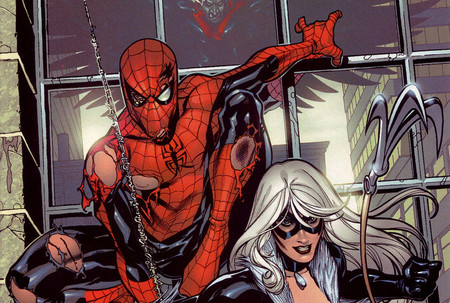

nfrenta responsabilidades reales como el matrimonio con Mary Jane, la precariedad laboral y su carrera como científico o profesor. Esta madurez se explora profundamente en versiones como el Peter B. Parker de Spider-Verse, quien lidia con el cansancio y la paternidad, o en el Peter de Insomniac Games, quien actúa como un mentor experimentado, demostrando que el núcleo del personaje no es su juventud, sino el equilibrio imposible entre su vida personal y el peso del sentido del deber.
inicio